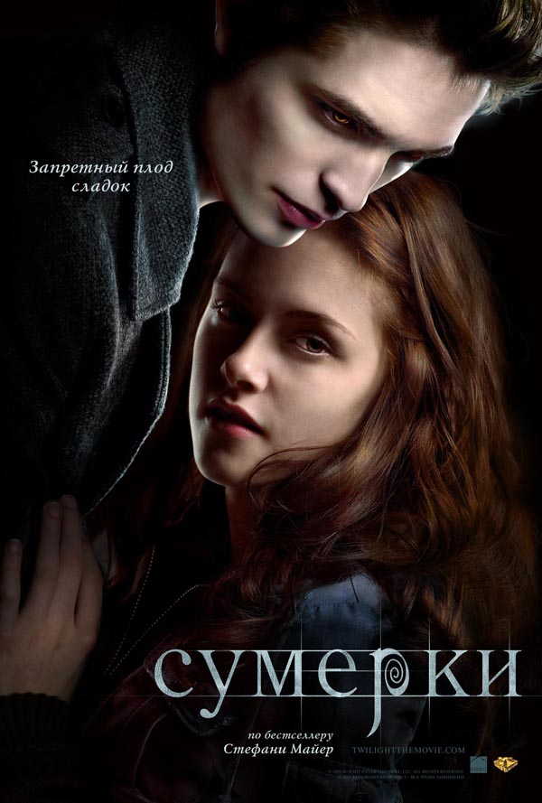

Другие фильмы с участием Роберта Патинсона:
- "Бетмен"
- "Гарри Поттер и кубор огня"
- "Высшее общество"
Семнадцатилетняя девушка Белла переезжает к отцу в небольшой городок Форкс. Она влюбляется в загадочного одноклассника, который, как оказалось, происходит из семьи вампиров, отказавшихся от нападений на людей. Влюбиться в вампира. Это страшно? Это романтично, это прекрасно и мучительно, но это не может кончиться добром, особенно в вечном противостоянии вампирских кланов, где малейшее отличие от окружающих уже превращает вас во врага.

В первоначальном сценарии фильма «Сумерки» Белла Свон отстреливала вампиров из дробовика, была звездой спорта.
Фильм «Сумерки» попал во все номинации премии «Золотая малина». «Сумерки» попали в номинации «худшая картина», «худший режиссер» и «худший сценарий». В целом же картина собрала 11 номинаций, несмотря на то, что сама премия предусматривает только 10. Дело в том, что критики дважды выдвинули дуэт Роберта Паттинсона и Кристен Стюарт в номинации «Худшая пара». Исполнители главных ролей также были представлены в списках худших актеров года.